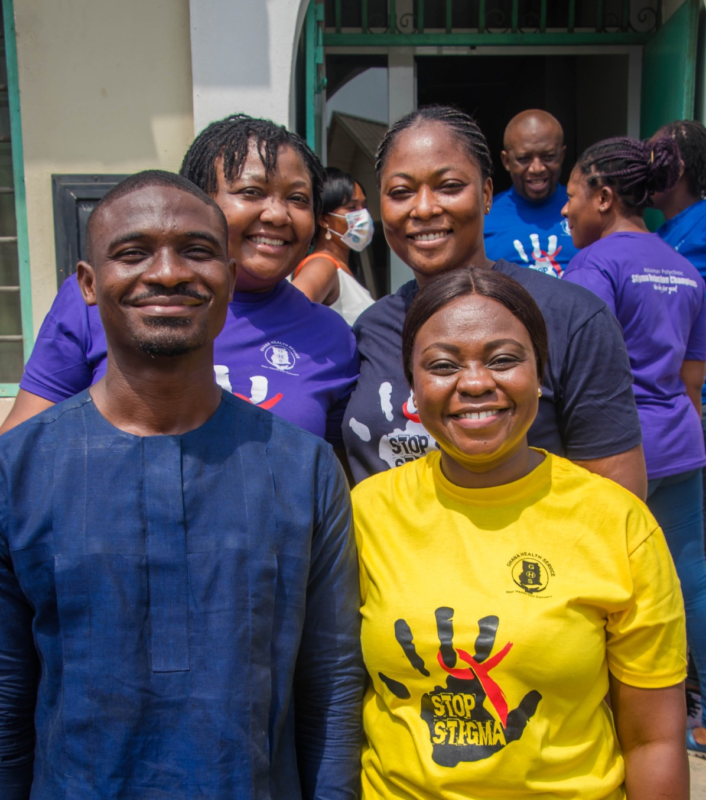

22 July 2024
Stigma and discrimination increase vulnerability to HIV acquisition and affect both quality of life, utilization of health services and treatment outcomes for people seeking HIV services. Engaging with health facilities and their employees to establish dignified, inclusive services is essential to provide quality services to meet global HIV targets and reach marginalized populations, such as men who have sex with men. Efforts and research focused on the reduction of intersectional stigma (stigma of various forms that overlap) has been implemented and evaluated for impact on testing and other services in several health facilities in Ghana, including Ashaiman Municipal Hospital.
Roberta Araba Amoquandoh is the HIV Coordinator at the Ashaiman Municipal Hospital in Accra, Ghana. She is a champion who participated in developing a stigma and discrimination reduction programme for her hospital based on the Total Facility Approach. Together with a team of champions and two facility colleagues, she implemented specific activities for their hospital after attending a stigma-reduction training of trainers. The activities included participatory trainings on stigma reduction for the majority (75%, or 145 people) of hospital staff at all levels and implementing other stigma-reduction interventions.
“I believe stigma and discrimination is an issue and I felt it was important that everyone learn and understand that someone living with HIV should not be treated differently,” she said. “I want everyone who comes to our facility from all communities to know that they will be treated with respect and dignity by everyone who works here.”
Roberta and the other two facilitators with a representative from Ghana based NGO at the launching of Ashaiman Municipal Hospital as a stigma free health care facility (photo © Richmond Nkruma).
As part of the programme of the 22nd International Conference on AIDS and STIs in Africa (ICASA 2023), held in December 2023 in Harare, Zimbabwe, WHO organized a satellite session to highlight and share good practices in reducing HIV-related stigma and discrimination in the healthcare settings. As a panellist of the WHO session, Roberta reflected on various aspects of her journey in becoming a stigma-reduction trainer and champion. This includes encouraging her healthcare facility colleagues to embrace the importance of these activities to provide dignified quality care to all clients. She joined the programme following a discussion with a community member who said, “If you want to change us, first love us.” She realized that community members need to feel more respected, heard and seen in her facility.
Her journey included being trained as a participatory stigma-reduction trainer, which introduced her to concepts and practices that were new to her, like teaching colleagues how to be positive about HIV testing, or on-boarding new staff, and providing services to clients from the stigmatized group.
As part of the participatory stigma-reduction training, Roberta learnt new concepts and practices such as promoting positive attitudes towards HIV testing among colleagues and orienting new staff to serve stigmatized clients. With support from the management team, Roberta and her colleagues gained skills to advocate for reducing stigma towards people living with HIV and key populations, conducting stigma-reduction trainings for facility staff including but not limited to administration, health care providers, security personnel and others. Training sessions encouraged open dialogue and participation, with staff using their preferred language. Activities included sharing personal stories and learning de-stigmatizing messages through songs, fostering enthusiastic engagement across the facility.
The participatory training activities that Roberta found most impactful included: 1) Stigma reflection: where trainees reflected on instances when they felt isolated or rejected from being different from others 2) Empowerment: as health care workers were provided tools and a safe place to practice new skills on addressing stigma related issues in a professional manner when speaking with both clients and colleagues and, 3) thinking outside the “gender box” as it taught participants that we all express our gender in different ways.
After the training, the hospital stigma-reduction champion and management teams developed additional facility specific initiatives These included banners, posters and announcements; introduction of complaint and compliment system; trainings for additional and new staff as well as conducting stigma reduction refresher exercises during staff meetings and ward rounds.
Finally, Roberta wanted to share a fellow nurse’s mantra that she holds true to herself, her colleagues and her community: “Treat everyone as you want to be treated.”
About the Intervention
The Total Facility Approach (TFA) to HIV-related reduction, which engages everyone in a health care facility, is a programme that aims at creating a more dignified and inclusive environment for all. It engages everyone in a health care facility. The TFA encompasses action at three levels in the healthcare system: 1) individual level with a focus on client interactions; 2) interpersonal level to focus on how staff work with each other (stigma towards each other); and 3) institutional/organizational level.
The TFA includes a training of trainers, facility level training and champion teams/facility activities and small grants to facilities to kick-start activities that were identified at the various levels that would impact stigma and discrimination (1). TFA addresses multiple and intersecting aspects of stigma and provides participatory trainers toolkits, available in several languages that can be adapted to the local context, different stigmas and specific facilities. It targets actionable drivers of stigma among health facility staff such as: fear of HIV acquisition, lack of awareness of stigma, attitudes, and health facility environment. This approach is built on 20 years of research and programmatic work and has been implemented in several countries, including in Ghana (1,2).
The original Health Policy Plus (HP+) TFA was adapted in Ghana to address intersectional stigma faced by men who have sex with men at health facilities through a multi-level intersectional stigma reduction cluster randomized trial named PRISM (Promoting the Reduction of Intersectional Stigma among men who have sex with men) (3,4). This programme was intended to reduce health facility intersectional stigma, increase autonomy and a supportive peer and health facility climate for men who have sex with men.